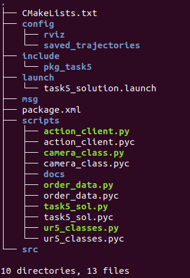
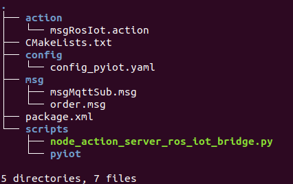

e-Yantra's Task Documentation!¶
Indices and tables¶
Introduction¶
Our Theme is “Vargi Bots”. Inspired by the visualisation of Industry 4.0, Vargi is taken from a Sanskrit word, Vargikaran (वर्गीकरण) which means to separate objects based on their category. The arena is an automated warehouse setting where essential packages are required to be sent out to different cities or different parts of a city. Since Industry 4.0 heavily focuses on automation here the warehouse only consists of two industrial robotics arms which are going to be used. As the requirements are sent to the warehouse, one robotic arm will identify the packages from a shelf and place them on a conveyor belt and the other robotic arm at the end of the conveyor belt will pick these objects from the conveyor and place them into the bins. Each bin represents a priority level, red bin for “High Priority (HP)”, yellow bin for “Medium Priority (MP)” & green bin for “Low Priority (LP)”. As the packages are sent out from the warehouse there will also be alerts sent to the user via email notifying them about the package being dispatched & shipped from the warehouse. The packages to be delivered have their own priorities. Packages having a higher priority are intended for a natural disaster or a pandemic situation. Other packages with lower priorities are for general purposes. Similar to a conductor in an orchestra, we have designed our own conductor for the warehouse to make smart decisions in order to deliver high priority packages as quickly as possible.
Implementation¶
- Packages Used :
- pkg_task5 = This package contains all the nodes and msg, config files that are required for the implementation for the Vargi Bots theme(Warehouse Automation).
- pkg_ros_iot_bridge : This package contains all the nodes and msg,config files that are required for the MQTT communication and invoking the action server that will receive goals from action clients and will process them.
- pkg_moveit_ur5_1 : This package is generated by using MoveIt! Setup assistant which will configure MoveIt! for UR51.
- pkg_moveit_ur5_2 : This package is generated by using Moveit! Setup assistant which will configure MoveIt! for UR52
- pkg_vb_sim : This package contains all the simulation environment that are required for the theme implementation.
- Topics used:
- /eyrc/vb/camera_1/image_raw = This is the topic on which the image taken by 2D camera in the warehouse will be published as image stream. The Image stream received by this topics’ subscription will be converted into an image using CV2 module and after doing image processing the QR codes in the images will be decoded to get information about each of the 12 packages on the shelf in warehouse.(refer camera_class module)
- /eyrc/vb/logical_camera_2 = This topic is used to get the model names that are under logical_camera_2 to stop the conveyor as soon as the package reaches below it so the ur52 can pick the package and place into its proper bin. This functioning is made possible in the function callback of this topics’ subscription in class Ur52 class present in the ur5_classes module.
- /2437/incomingorders/ = (Custom topic) : This topic is used to communicate internally with the nodes to get the incoming orders which is received by action server after the incoming order is being published on the MQTT topic /eyrc/vb/JjAaHhBb/orders . The action server will publish the order received on this topic so that other nodes can access this orders’ information
- Services used:
- /eyrc/vb/conveyor/set_power = This service is used for controlling the speed of the conveyor belt. Power ranges between 0-100.
- /eyrc/vb/ur5/activate_vacuum_gripper/ur5_1 = This service is used for activating or deactivating the vaccum gripper of ur51.
- /eyrc/vb/ur5/activate_vacuum_gripper/ur5_2 = This service is used for activating or deactivating the vaccum gripper of ur52
- MQTT Topic (Default):
- /eyrc/vb/JjAaHhBb/orders: This is the MQTT topic on which orders will be placed after certain intervals (automatic).
- Action Server used:
- /action_ros_iot = This is the action name used by the action server to create action clients that will send goals to this action server.
- Data structure and Sorting algorithm used for sorting the packages:
- The concept of priority queues is used to store and sort the packages based on their priority.
- Three priority queues are used :
- ORDER_HP = This list will be storing information regarding the High priority packages
- ORDER_MP = This list will be storing information regarding the Medium priority packages
- ORDER_LP = This list will be storing information regarding the Low priority packages
- The get_order() function will do all the task related to sorting and giving the order of highest priority present at that instance to ur51. First the ORDER_HP list will be checked, if orders is present in the list (queue) then it will pop the order at index 0 and return that order. Else if the list is empty it will check inside ORDER_MP list and in the same manner the ORDER_LP list will be checked. If all the lists are empty it will repeatedly check for each list until an order is received.
- Nodes used:
- node_iot_ros_bridge_action_server
- node_task5_solution
rqt Graph
- Methodology and Working of nodes:
The gazebo will be launched along with the spreadsheets and HIVE MQTT portal. A new Subscription will be added for the MQTT topic /eyrc/vb/JjAaHhBb/orders on Hive MQTT . node_action_server_ros_iot_bridge.py (node_iot_ros_bridge_action_server)
This node will invoke the action server to receive goals. The config file used by this action server is (Image)
The action server will subscribe to the MQTT topic /eyrc/vb/JjAaHhBb/orders. Once the order will be published on this MQTT topic, it will be received in its subscribers’ function callback. This order will be then published to the custom topic /2437/incomingorders/ .
Second task of this action server is to send data to the spreadsheet. The action client will send goal with protocol “google-apps” and mode “push” to push the data to required spreadsheet. The goal will be processed in function process_goal_1. The function called to send data to spreadsheet is iot.to_spreadsheet(url,data) which resides in iot module inside pyiot folder.
- task5_solution.py ( node_task5_solution)
- This node will first subscribe to the topic /eyrc/vb/camera_1/image_raw to get the image stream. A new of object of class Camera1 (c_1) is created to handle the task of image processing. Once the image is received it will be cropped into 12 parts , each part having one packages’ QR code. After cleaning the image (adding contrast and reducing noise in the image) the QR code will be decoded. On the basis of the result(color) the priority will be assigned and the package will be appended into the colors dictionary (The colors dictionary is having the key as the package name and value as its item type.) At the same time the data regarding each decoded package will be sent to the inventory spreadsheet as a goal to action server via action_client.
- This node has also subscribed to the topic /2437/incomingoreders/ (custom topic). As the message regarding the package is being published on this topic the function callback of this subscription will append the order according to its priority in its respective list (queue).
- Once the packages on the shelf are decoded, this node will start two different threads :
- t1 = process_ur5_1
- t2 = process_ur5_2
- Both the threads will run simultaneously to reduce the simulation time.
- process_ur5_1() :
- The process_ur5_1 starts by first setting the ur51 arm to its home position
- After the order is received by the get_order() function , get_row_col() function will be called. It will scan whole colors dictionary to get the package name which has item type equivalent to the current_orders’ item type. Once the package name is found , its row number and column number is extracted and that package is removed from the colors dictionary. Row, Column number and updated colors dictionary is returned.
- The waypoints list is containing the number of saved trajectories for the package at its indexes. The gripper list is containing the number of the saved trajectory after which the gripper is to be activated when executing the saved trajectories for a particular package.
- After getting the row and column no. of required package, its saved trajectories are executed and once the ur51 places order on the conveyor it will send goal to action server to send data to spreadsheet “DispatchedOrders” and “Dashboard”. At the same time DISPATCHED_ORDER list will be appended by this order.
- But before placing the order on the conveyor, ur51 will check the CONVEYOR_FLAG status which means if the any previous package that is currently present on the conveyor is being picked by ur52 or not. If not, then it will wait for ur52 to pick that package and then it will place this package on conveyor and then start the conveyor. If previous package is not present on the conveyor, then it will simply place the package and start the conveyor.
- This whole process will run repeatedly for each package which is present in the priority queue.
- process_ur5_2() :
- The process_ur5_2 will start by first setting the ur52 arm to its home position.
- Once the package is below the logical_camera_2 the conveyor will stop and ur52 will pick the package.
- On the basis of the order present at the 0th index of the DISPATCHED_ORDER list, it will be popped out and stored in variable current_order. The current_order priority will decide the bin color and ur52 will set its angle to go to that particular bin.
- Once the package is dropped by ur52, action_client will send goal to action server to send data to spreadsheet “ShippedOrders” and “Dashboard”
- This process will run repeatedly for each package which is detected by the logical_camera_2.
MSG files used¶
order.msg
This msg file is being used by the topic /2437/incomingorders/ . It contains following feilds –
- string order_id = The order_id of the item is stored in this
- string city = The city from where order is generated is stored is this
- string item = The type of the item specified in the order
- string qty = The quantity of the item
- string latitude = The latitude of the location where order needs to be delieverd
- string longitude = The longitude of the location where order needs to be delievered
- string priority = The priority of the order whehter it is HP/MP/LP
- string order_time = The time at which order was placed
- int32 cost = The cost of the order item.
msgMqttSub.msg
This msg file will be used by the topic “ /ros_iot_bridge/mqtt/sub” . It contains following feilds:
- time timestamp = timestamp
- string topic = Subscription MQTT topic name
- string message = incoming message from MQTT subscription
YAML files used¶
ROS build will create Python Dictionary called as config_pyiot. This dictionary will have two keys :
mqtt – The value of this key contains of a dictonary that contains 6 keys:
- server_url = The value stored in this key is the MQTT server url
- server_port = by default it is 1883 for mqtt protocol
- topic_sub = the value of this key is the topic that action server will subscribe to get messages published on MQTT.
- topic_pub = the value of this key is the topic on which action server will publish messages. MQTT should subscribe to this topic.
- qos = the value of this key is set to 0 which means that publication is sent but there is no confirmation about it.
- sub_cb_ros_topic = the value of this key is a topic on which ROS nodes can listed to receive data from MQTT Subscription
google_apps – The value of this key contains a dictionary which has 2 keys :
- spread_sheet = the value of this key the spreadsheet url that is being used by the team for implementation
- submission_spread_sheet = the value of this key is the spreadsheet url of eyantra on which submission is done.
In the task5_solution.launch file we have used rospy to get parameters stored in this config_pyiot dictionary.
Action files used¶
msgRosIot.action
This action file will be used by the action client to send goals to the action server. The same action file can be used to give reslut and feedback to action client.
- #goal
- string protocol = This is the protocol on which message is to be sent
- string mode = The mode whether it is pub/sub for MQTT and push for googl_apps
- string topic = The topic on which the message is to be published/subscribed (MQTT)
- string message = The message that needs to be processed
- #result
- bool flag_success = Either True – If goal is processed successfully / False – If goal is not processed
- #feedback
- int8 percentage_complete = The percentage of goal processing